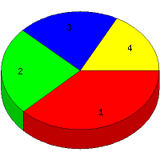

Week of 8/9/2009 to 8/15/2009: Top
4 of
4 File Types (Extensions)
Sorted by Access Count
Individual file types as determined by file extensions. All URLs that
do not contain an extension are counted as directories.

| Rank |
Type |
Accesses |
% |
Bytes |
% |
| 1 |
gif
|
42 |
37.84 |
602,224 |
33.49 |
| 2 |
jpg
|
27 |
24.32 |
1,076,942 |
59.89 |
| 3 |
Directory (folder)
|
23 |
20.72 |
57,750 |
3.21 |
| 4 |
htm
|
19 |
17.12 |
61,157 |
3.40 |